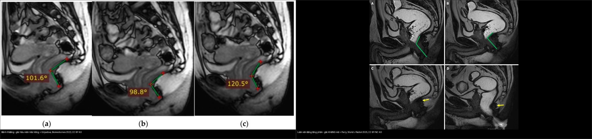
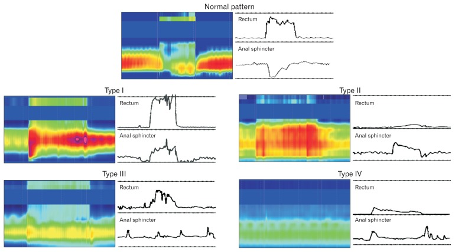
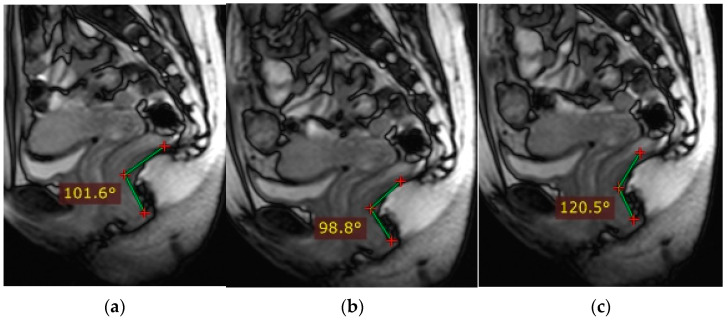
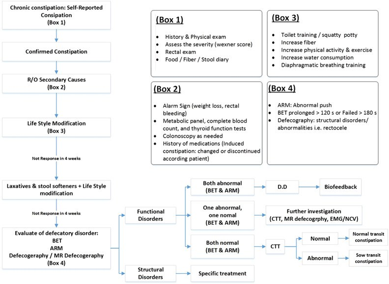
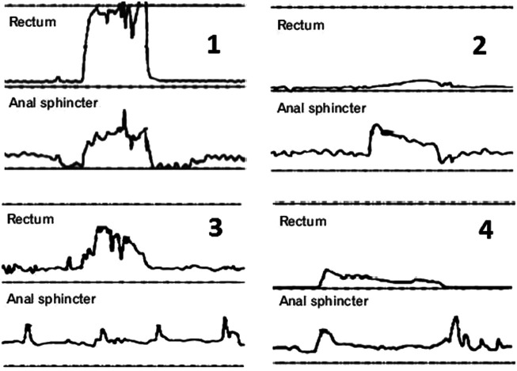
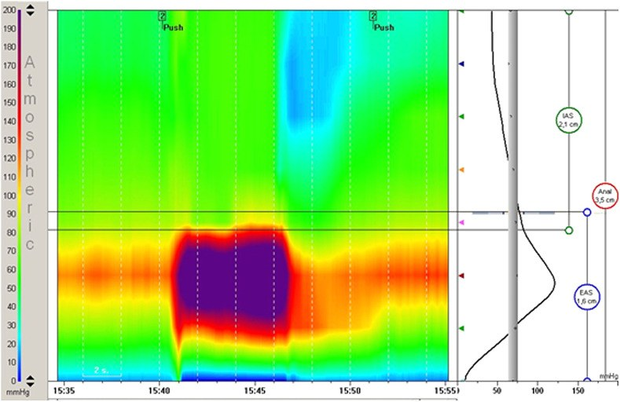
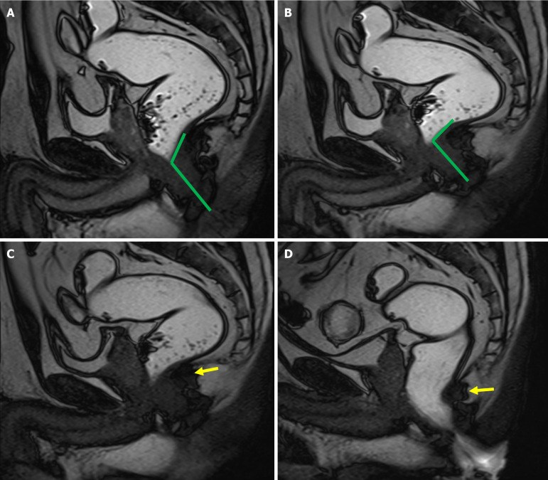
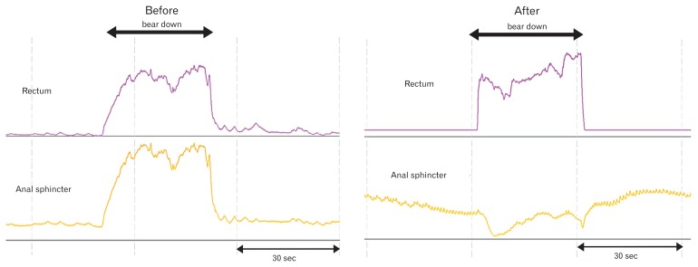

546 — Loạn vận động tống phân (anismus / dyssynergic defecation): manometry & MR defecography
Tags: pattern:loan-van-dong-tong-phan vung:tieu-khung vung:truc-trang-hau-mon score:Rao-type protocol:MR-defecography protocol:manometry
Mức chắc chắn (certainty): tổng hợp y văn (literature synthesis) — nhóm tự biên từ y văn mở (bài gốc có Fig. ID ghi rõ), chưa gắn một bệnh án riêng.
1. Tổng quan — tống phân là một "điệu nhảy" phối hợp, hỏng nhịp thì phân không ra
- Loạn vận động tống phân (dyssynergic defecation, DD) — còn gọi là anismus, hội chứng sàn chậu co cứng (spastic pelvic floor syndrome) hay co cơ mu‑trực tràng nghịch lý (paradoxical puborectalis contraction): bệnh nhân rặn hết sức mà phân không ra vì cơ thắt hậu môn ngoài và cơ mu‑trực tràng (puborectalis) KHÔNG giãn ra mà còn co lại trong lúc tống phân. Đây là rối loạn hành vi–thần kinh cơ, KHÔNG phải bệnh thực thể và KHÔNG nên mổ.
- TẠI SAO tống phân cần hai điều kiện đồng thời: (1) áp lực đẩy của trực tràng đủ mạnh, và (2) cửa ra mở do cơ mu‑trực tràng + cơ thắt hậu môn ngoài giãn. Trong DD có sự mất phối hợp (incoordination) giữa hai vế:
- Áp lực đẩy không đủ: áp lực trực tràng ≤ 40–45 mmHg (ngưỡng của Rao và bài gốc; bình thường phải > 40–45 mmHg).
- Cửa ra không mở: giảm < 20% áp lực cơ thắt hậu môn so với lúc nghỉ (thay vì phải giảm nhiều), hoặc áp lực hậu môn tăng nghịch lý khi rặn.
- TẠI SAO đọc trên hai phương thức khác nhau:
- Manometry hậu môn–trực tràng độ phân giải cao (high-resolution anorectal manometry, HR‑ARM) đo áp lực theo thời gian → phân biệt được áp lực đẩy đủ hay thiếu và cơ thắt có giãn hay không ⇒ đây là chìa khóa phân 4 kiểu Rao.
- MR defecography (MRD) đo hình học mô mềm: góc hậu môn–trực tràng (anorectal angle, ARA) và vị trí ngã ba hậu môn–trực tràng (anorectal junction, ARJ) qua các thì nghỉ → ép → rặn → tống phân. Trong DD, ARA không mở ra (thậm chí hẹp lại) dù rặn hết sức — cơ chế: cơ mu‑trực tràng co nghịch lý kéo góc hẹp thay vì giãn.
- Ngưỡng định lượng trên MRD cho DD (Parry, World J Radiol 2025): ARA lúc tống phân < 122°, mức thay đổi ARA (ΔARA) < 1,5°**, **ARJ tụt > 3,25 cm dưới đường PCL. Co cơ mu‑trực tràng nghịch lý (đối chiếu manometry) có độ nhạy 83%; ARA không mở có độ nhạy 50% nhưng độ đặc hiệu 97%; gộp cả hai dấu hiệu → độ nhạy 94%.
- Dịch tễ: DD là nguyên nhân thường gặp nhất của rối loạn tống phân, chiếm 27–59%; khoảng 1/3 bệnh nhân táo bón mạn có rối loạn tống phân; táo bón chức năng gặp ở 16% người lớn và 33,5% người 60–100 tuổi (Parry 2025). Cạm bẫy dịch tễ: 20–30% người khỏe mạnh cũng có co cơ hậu môn nghịch lý thoáng qua (Sadeghi, Turk J Gastroenterol 2023) ⇒ không thể chẩn đoán chỉ bằng một dấu hiệu đơn độc.
2. Mẫu hình + chẩn đoán phân biệt theo cơ chế (Gamut)
- Gamut "tống phân khó" (obstructed defecation) theo cơ chế:
- Rối loạn chức năng (không mổ): loạn vận động tống phân (DD) — co nghịch lý hoặc không giãn; táo bón chậm vận chuyển (slow transit constipation) — nhu động đại tràng kém; loạn cảm trực tràng (rectal hyposensitivity/ hypersensitivity).
- Tắc nghẽn giải phẫu (có thể mổ): rectocele (túi phình thành trước trực tràng), lồng trực tràng (rectal intussusception) / sa trực tràng, enterocele/peritoneocele, u/khối trong lòng.
- Bệnh đoạn cuối ruột (organic): bệnh Hirschsprung (thiếu tế bào hạch → mất phản xạ giãn cơ thắt hậu môn–trực tràng, RAIR), viêm/loét hậu môn (fissure) gây đau–nín rặn, tổn thương tủy/đa xơ cứng, sau phẫu thuật/mãn kinh yếu sàn chậu.
- Gợi nhớ "DD vs phần còn lại": (1) có mất phối hợp không? (2) có phản xạ giãn khi bơm bóng (RAIR) không? (3) thời gian vận chuyển đại tràng có chậm không? (4) có sa/tắc nghẽn giải phẫu kèm theo không?
- Điểm dễ nhầm: DD và chậm vận chuyển cùng tồn tại ở tới 2/3 bệnh nhân (Sadeghi 2023) — không loại trừ nhau; DD có thể gây chậm vận chuyển thứ phát.
3. Bảng so sánh phân biệt (ma trận đối chiếu)
| Thực thể (entity) | Hình ảnh / nghiệm pháp điển hình | Chốt vào (rule-in) | Chốt loại (rule-out) | Gợi ý xác nhận |
|---|---|---|---|---|
| Loạn vận động tống phân (DD/anismus) | Manometry: áp lực đẩy yếu và/hoặc cơ thắt không giãn–co nghịch lý; MRD: ARA không mở khi rặn | Đẩy ≤ 40–45 mmHg và/hoặc giảm < 20% áp lực hậu môn khi rặn; ΔARA < 1,5°; balloon 50 mL không ra trong 1–2 phút | Áp lực đẩy đủ + cơ thắt giãn bình thường + ARA mở > 122° → không phải DD | HR‑ARM + balloon expulsion; MRD 4 thì |
| Táo bón chậm vận chuyển (slow transit) | Manometry bình thường; thời gian vận chuyển đại tràng kéo dài trên phim marker | > 5/24 marker (≥ 20%) còn lại sau 5 ngày | Manometry/phối hợp tống phân bình thường → không phải DD | Colon transit time (marker) |
| Bệnh Hirschsprung (người lớn, hiếm) | Áp lực hậu môn nghỉ cao; mất phản xạ giãn cơ thắt khi bơm bóng | Mất RAIR (không giảm áp lực hậu môn khi bơm bóng) + sinh thiết thiếu hạch | Có RAIR + sinh thiết đủ hạch → loại Hirschsprung | Manometry + sinh thiết hút trực tràng |
| Rectocele / lồng trực tràng | MRD: phồng thành trước trực tràng hoặc niêm mạc lồng vào lòng khi tống phân | Rectocele > 2 cm hoặc lồng trực tràng vào ống hậu môn | Không lồi, không lồng khi tống phân → loại | MRD thì tống phân |
| Loạn cảm trực tràng | Bơm bóng: ngưỡng cảm nhận/đau tăng hoặc giảm | Ngưỡng cảm giác bất thường đơn độc | Phối hợp tống phân bình thường → không phải rối loạn vận động | Manometry cảm giác (barostat) |

*Trái: bình thường — ARA 101,6° (nghỉ) → 98,8° (ép) → 120,5° (rặn), góc MỞ RA khi rặn (Gilyadova, Biomedicines 2023, CC BY 4.0). Phải: loạn vận động — góc KHÔNG mở khi rặn do cơ mu‑trực tràng co nghịch lý (Parry, World J Radiol 2025, CC BY‑NC 4.0). Ảnh ghép letterbox.*Ba dấu hiệu chốt cần đọc đúng trên manometry và MRD
- Áp lực đẩy (propulsive force): bình thường > 40–45 mmHg; thiếu ⇒ kiểu Rao 2/4.
- Giãn cơ thắt: bình thường giảm ≥ 20% áp lực hậu môn khi rặn; không giãn hoặc tăng nghịch lý ⇒ DD.
- MRD: ARA phải mở khi rặn; ngưỡng DD ARA < 122° / ΔARA < 1,5° / ARJ tụt > 3,25 cm dưới PCL.

Panô trên: tống phân bình thường — áp lực đẩy trực tràng tăng, áp lực hậu môn GIẢM (giãn). Panô dưới: loạn vận động — áp lực đẩy yếu/không tăng trong khi áp lực hậu môn TĂNG nghịch lý. Nguồn: Rao SS & Patcharatrakul T, J Neurogastroenterol Motil 2016, PMC4930297 Fig. 1, CC BY‑NC.4. Protocol + hệ phân độ/điểm chuẩn hóa
- Bước 1 — Nghi vấn lâm sàng: táo bón tống phân khó, rặn lâu, cảm giác "tắc nghẽn đường ra", phải dùng tay hỗ trợ (digital maneuvering).
- Khám trực tràng bằng ngón (digital rectal examination, DRE): sàng lọc tại giường rẻ và tin cậy — độ nhạy 75%, độ đặc hiệu 87%, giá trị tiên đoán dương 97% (Sadeghi 2023).
- Bước 2 — Balloon expulsion test (BET): nghiệm pháp sàng lọc đầu tay; không đẩy được bóng nước 50 mL trong 1–2 phút = bất thường.
- Bước 3 — HR‑ARM theo IAPWG/London: phân 4 kiểu Rao; Bước 4 — MRD 4 thì (nghỉ → ép → rặn → tống phân) khi cần đánh giá giải phẫu + động học.

Chỉ số bình thường: góc hậu môn–trực tràng thay đổi theo thì (nghỉ → ép → rặn/mở). Nguồn: Gilyadova A et al., Biomedicines 2023, PMC10604435 Fig. 2, CC BY 4.0.- Nội soi đại tràng: khoảng 80% bệnh nhân DD có nội soi bình thường; chỉ soi khi có chỉ định sàng lọc.
Phân loại 4 kiểu loạn vận động (Rao) trên manometry
| Kiểu (Rao) | Áp lực đẩy | Cơ thắt hậu môn | Ý nghĩa |
|---|---|---|---|
| Type 1 | ≥ 40 mmHg (đủ) | Tăng nghịch lý | Rặn mạnh nhưng cửa co lại |
| Type 2 | < 40 mmHg (yếu) | Tăng nghịch lý | Yếu lực + cửa co lại (hay gặp) |
| Type 3 | ≥ 40 mmHg (đủ) | Không giãn (giảm ≤ 20 mmHg) | Cửa không mở, không tăng nghịch lý |
| Type 4 | < 40 mmHg (yếu) | Không giãn (giảm ≤ 20 mmHg) | Yếu lực + cửa không mở |
Tiêu chuẩn Rome IV cho rối loạn tống phân chức năng: thỏa tiêu chuẩn táo bón chức năng/IBS‑C, cộng bằng chứng tống phân không hiệu quả (không đẩy được bóng 50 mL trong 1–2 phút; hoặc giữ ≥ 50% barium khi defecography; hoặc cơ thắt co nghịch lý/không giãn; hoặc lực đẩy không đủ).
flowchart TD
A[Táo bón mạn + rặn tống phân khó] --> B[Khám trực tràng ngón DRE<br/>+ Balloon expulsion test]
B -->|Bất thường| C[HR-ARM: đo áp lực đẩy & giãn cơ thắt]
B -->|Bình thường| H[Xét chậm vận chuyển đại tràng / khác]
C --> D{Kiểu Rao?}
D -->|Type 1/2 đẩy đủ-yếu + co nghịch lý| E[Loạn vận động - co nghịch lý]
D -->|Type 3/4 không giãn| F[Loạn vận động - không giãn]
E --> G[MRD 4 thì: ARA không mở < 122°]
F --> G
G --> I[ĐIỀU TRỊ: tập thói quen + biofeedback sàn chậu]
I --> J{Đáp ứng 4-6 buổi?}
J -->|Có| K[Tiếp tục - hiệu quả giữ > 2 năm]
J -->|Không| L[Cân nhắc botulinum / myectomy / neuromodulation]
H --> M[Loại Hirschsprung: tìm RAIR]

Lưu đồ gợi ý của bài gốc: loại trừ (R/O) nguyên nhân thực thể → balloon expulsion (BET) → anorectal manometry (ARM) → MR defecography → phân loại DD → manometry/EMG/NCV. Nguồn: Sadeghi A et al., Turk J Gastroenterol 2023, PMC10152153 Fig. 3, CC BY 4.0.- Điều trị (TẠI SAO không mổ): biofeedback sàn chậu là điều trị đầu tay, hiệu quả 70–80% trong các thử nghiệm đối chứng ngẫu nhiên và tốt hơn giả dược, polyethylene glycol hay diazepam; hiệu quả duy trì > 2 năm (Rao, J Neurogastroenterol Motil 2016). Phác đồ: giáo dục thói quen đại tiện + 4–6 buổi, mỗi buổi 30–60 phút, cách nhau 1–2 tuần; đánh giá thành công khi bệnh nhân đạt kiểu tống phân bình thường ở ≥ 50% số lần trong 2 buổi liên tiếp. Myectomy/botulinum chỉ giúp 10–30% (Sadeghi 2023) ⇒ không phải lựa chọn đầu.
5. Biến thể bình thường và cạm bẫy
- Co nghịch lý "giả" ở người khỏe: 20–30% người khỏe mạnh có thể thoáng co cơ hậu môn nghịch lý — không chốt DD bằng dấu hiệu đơn độc (Sadeghi 2023).
- BET dương tính đơn độc chưa đủ: phải phối hợp manometry ± MRD.
- DD và chậm vận chuyển chồng lấp (tới 2/3): đừng dừng chẩn đoán ở "chậm vận chuyển" mà bỏ qua DD.
- MRD nằm ngửa có thể âm tính giả ở ca nhẹ; nhớ đọc thì tống phân (cạm bẫy y như bài 545) — thì nghỉ bình thường không loại trừ DD.
- Đừng mổ sa khi chưa loại DD: phẫu thuật cắt niêm mạc/STARR ở người DD không giúp và có thể làm nặng hơn.
- Cạm bẫy mặt cắt: phân biệt rối loạn chức năng (không tắc nghẽn thật) với tắc nghẽn giải phẫu (rectocele/lồng trực tràng) — cùng "tống phân khó" nhưng hướng xử trí ngược nhau; luôn tìm dấu hiệu giải phẫu trên MRD trước khi quy kết "chỉ do DD".
- RAIR: mất RAIR gợi ý Hirschsprung (bệnh thực thể) — không được nhầm với DD.
6. Tự lượng giá — Blind Quiz
Ca 1 — Bốn kiểu loạn vận động trên manometry: mô tả từng kiểu trước khi mở đáp án.

- Gợi ý lâm sàng: người lớn táo bón mạn, rặn tống phân khó.
- Hỏi: các kiểu khác nhau ở áp lực đẩy hay kiểu co cơ thắt? Kiểu nào có co nghịch lý?
Bấm để hiện đáp án (findings + chẩn đoán)
- Dấu hiệu (findings): Type 1 đẩy đủ (≥ 40 mmHg) + tăng nghịch lý áp lực hậu môn; Type 2 đẩy yếu (< 40 mmHg) + tăng nghịch lý; Type 3 đẩy đủ + không giãn (giảm ≤ 20 mmHg); Type 4 đẩy yếu + không giãn.
- Chẩn đoán (diagnosis): loạn vận động tống phân — cơ chế: mất phối hợp giữa lực đẩy trực tràng và sự giãn cơ thắt hậu môn–mu‑trực tràng.
- Nguồn ảnh: Sadeghi A et al., Turk J Gastroenterol 2023, PMC10152153 Fig. 1, CC BY 4.0.
Ca 2 — Manometry trong thì rặn: đây là kiểu nào?

- Gợi ý lâm sàng: bệnh nhân rặn mạnh nhưng phân không ra.
Bấm để hiện đáp án (findings + chẩn đoán)
- Dấu hiệu (findings): khi rặn, áp lực trong trực tràng KHÔNG tăng trong khi áp lực hậu môn tăng rõ ⇒ lực đẩy yếu kèm co nghịch lý.
- Chẩn đoán (diagnosis): loạn vận động tống phân Type 2 — vì thiếu lực đẩy và cơ thắt tăng nghịch lý; hướng xử trí = biofeedback, không mổ.
- Nguồn ảnh: Sadeghi A et al., Turk J Gastroenterol 2023, PMC10152153 Fig. 2, CC BY 4.0.
Ca 3 — MRD thì rặn: góc hậu môn–trực tràng mở hay không?

- Gợi ý lâm sàng: táo bón tống phân khó, đã loại nguyên nhân thực thể.
- Hỏi: góc hậu môn–trực tràng thay đổi thế nào khi ép và khi rặn? Có tắc nghẽn giải phẫu không?
Bấm để hiện đáp án (findings + chẩn đoán)
- Dấu hiệu (findings): ARA tù (> 90°) lúc nghỉ, hẹp lại khi ép, và khi rặn thì càng hẹp lại / KHÔNG mở — do co nghịch lý cơ mu‑trực tràng, không có khối tắc nghẽn giải phẫu.
- Chẩn đoán (diagnosis): loạn vận động tống phân (dyssynergic defecation) — ngưỡng MRD: ARA lúc tống phân < 122° và ΔARA < 1,5°; "ARA không mở" có độ đặc hiệu 97%, gộp với co nghịch lý mu‑trực tràng cho độ nhạy 94%.
- Nguồn ảnh: Parry AH et al., World J Radiol 2025, PMC12210197 Fig. 11, CC BY‑NC 4.0.
Ca 4 — Bình thường hay loạn vận động? So sánh hai bên rồi mở đáp án.
Bấm để hiện đáp án (findings + chẩn đoán)
- Dấu hiệu (findings): trái — ARA mở ra khi rặn (101,6° → 120,5°) = bình thường; phải — ARA không mở khi rặn = loạn vận động.
- Chẩn đoán (diagnosis): đối chiếu động học qua các thì là chìa khóa — ARA phải mở khi tống phân; nếu hẹp lại hoặc đứng yên (ΔARA < 1,5°) thì nghĩ DD.
- Nguồn ảnh: Gilyadova A et al., Biomedicines 2023 (PMC10604435, CC BY 4.0) + Parry AH et al., World J Radiol 2025 (PMC12210197, CC BY‑NC 4.0).
Ca 5 — Manometry trước và sau điều trị: có cải thiện không?

Bấm để hiện đáp án (findings + chẩn đoán)
- Dấu hiệu (findings): trước điều trị — áp lực đẩy yếu kèm co nghịch lý; sau biofeedback — mẫu hình tống phân trở về bình thường (đẩy đủ + cơ thắt giãn).
- Chẩn đoán (diagnosis): loạn vận động tống phân đáp ứng biofeedback — điều trị đầu tay hiệu quả 70–80%, duy trì > 2 năm; minh chứng DD là rối loạn hành vi có thể học lại, không phải bệnh mô học.
- Nguồn ảnh: Rao SS, Patcharatrakul T, J Neurogastroenterol Motil 2016, PMC4930297 Fig. 2, CC BY‑NC.
Bài liên quan chéo
- 500 – Tổng quan Vú & Sản Phụ khoa
- 545 – MR động học sàn chậu (sa theo khoang, PCL/H/M) (cùng kỹ thuật MRD; phân biệt sa với rối loạn chức năng)
- 547 – Sa tạng chậu nữ: phân độ POP-Q & lưới nâng (nhánh "tắc nghẽn giải phẫu" của cùng gamut)
- 162 – Tắc ruột (tắc nghẽn đường tiêu hóa — nhưng ở DD KHÔNG có tắc thật)
Ảnh
- Ảnh tải về theo giấy phép từng file — xem
images/CREDITS.md. - Nguồn chính: Sadeghi A et al., Turk J Gastroenterol 2023, PMC10152153 (CC BY 4.0); Parry AH et al., World J Radiol 2025, PMC12210197 (CC BY‑NC 4.0); Rao SS & Patcharatrakul T, J Neurogastroenterol Motil 2016, PMC4930297 (CC BY‑NC); Gilyadova A et al., Biomedicines 2023, PMC10604435 (CC BY 4.0).
- Nhóm không tải ảnh paywall/cấm (AuntMinnie) — chỉ dẫn link trong
sources.md.
Không dùng để chẩn đoán độc lập khi chưa có người hướng dẫn.